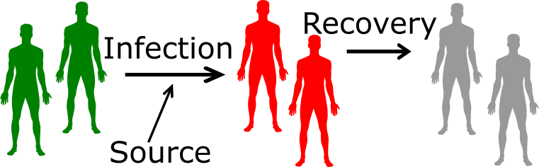

How do we do science?

dilbert.com
How do we get data?

xkcd.com
Experimental studies
- The approach used in almost all bench/lab sciences.
- Clinical trials in Public Health and Medicine.
- Potentially most powerful because we have most control.
- Not always possible.
xkcd.com
Observational studies
- Widely used in Public Health and other areas (e.g. Sociology, Geology).
- Not as powerful as experimental studies.
- Jim Borgman
- Often the only option.
Simulation/modeling studies
- Computer models can represent a real system.
- Simulated data is not as good as real data.

xkcd.com
- Often the only option.
Modeling definition
- The term modeling usually means (in science) the description and analysis of a system using mathematical or computational models.
Not this

This one
- Many different types of modeling approaches exist. Simulation models are one type (with many subtypes).
A way to classify computational/mathematical models
- Statistical/phenomenological models
- Look at patterns in data
- Do not describe mechanisms leading to the data
- Mechanistic/process/simulation models
- Try to represent simplified versions of mechanisms
- Can be used with and without data
Phenomenological/Non-mechanistic models
- You might be familiar with statistical models (that includes Machine Learning, AI, Deep Learning,…).
- Most of those models are phenomenological/non-mechanistic (and static).
- Those models are used extensively in all areas of science.
- The main goal of these models is to understand data/patterns and make predictions.

xkcd.com
Non-mechanistic model example 1

Impact of duration of infection on outbreak size. The fit model is \(F = b_0 + b_1 D +b_2 D^2 + b_3 D^3\).
Non-mechanistic model example 2
Impact of drug dose (C) on virus load (area under the curve, AUC). The function AUC = \(V_{max} (1-\frac{C}{C+C_{50}})\) is fit to the data.
Non-mechanistic models - Advantages
- Finding correlations/patterns is (relatively) simple.
- Some models are very good at predicting (e.g. Netflix recommender, Google Translate).
- Sometimes we can go from correlation to causation.
- We don’t need to understand all the underlying mechanisms to get actionable insights.
dilbert.com
Non-mechanistic models - Disadvantages
- The jump from correlation to causation is always tricky (bias/confounding/systematic errors).
- Even if we can assume a causal relation, we do not gain a lot of mechanistic insights or deep understanding of the system.

xkcd.com
Mechanistic models
- We formulate explicit mechanisms/processes driving the system dynamics.
- This is done using mathematical equations (often ordinary differential equations), or computer rules.
- Also called systems dynamics models or (micro)simulation models.
\[ \begin{aligned} \dot S & = -bSI \\ \dot I & = bSI - g I \\ \dot R & = g I \\ \end{aligned} \]
Mechanistic model example
Total virus load (VAUC) as function of drug efficacy, e.
\[ \begin{aligned} \textrm{Uninfected Cells} \qquad \dot{U} & = n - bUV -mU \\ \textrm{Infected Cells} \qquad \dot{I} & = bUV - d_I I - mI\\ \textrm{Virus} \qquad \dot{V} & = p(1-e)I - d_V V - gb UV \end{aligned} \]
Mechanistic models - Advantages
- We get a potentially deeper, mechanistic understanding of the system.
- We know exactly how each component affects the others in our model.
\[ \begin{aligned} \dot S & = -bSI \\ \dot I & = bSI - gI \\ \dot R & = gI \\ \end{aligned} \]
Mechanistic models - Disadvantages
- We need to know (or assume) something about the mechanisms driving our system to build a mechanistic model.
- If our assumptions/model are wrong, the “insights” we gain from the model are spurious.

\[ \begin{aligned} \dot S & = -bSI \\ \dot I & = bSI - gI \\ \dot R & = gI \\ \end{aligned} \]
Non-mechanistic vs Mechanistic models
- Non-mechanistic models (e.g. regression models, machine learning) are useful to see if we can find patterns in our data and possibly predict, without necessarily trying to understand the mechanisms.
- Mechanistic models are useful if we want to study the mechanism(s) by which observed patterns arise.
Ideally, you want to have both in your ‘toolbox’.
Simulation models
- We will focus on a specific class of mathematical/computational models, namely mechanistic simulation models.
- Those models are also called dynamical systems models or process models or ODE models or mathematical models or models or …
- The hallmark of such models is that they explicitly (generally in a simplified manner) model processes occuring in a system.
Simulation modeling uses
- Weather forecasting.
- Simulations of a power plant or other man-made system.
- Predicting the economy.
- Infectious disease transmission.
- Immune response modeling.
- …

www.gocomics.com/nonsequitur
A real-world example
Targeted antiviral prophylaxis against an influenza pandemic (Germann et al 2006 PNAS). 
Within-host and between-host modeling
| Within-host/individual level | Between-host/population level |
|---|---|
| Spread inside a host (virology, microbiology, immunology) | Spread on the population level (ecology, epidemiology) |
| Populations of pathogens & immune response components | Populations of hosts (humans, animals) |
| Acute/Persistent (e.g. Flu/TB) | Epidemic/Endemic (e.g. Flu/TB) |
| Usually (but not always) explicit modeling of pathogen | Often, but not always, no explicit modeling of pathogen |
The same types of simulation models are often used on both scales.
Population level modeling history
- 1766 - Bernoulli “An attempt at a new analysis of the mortality caused by smallpox and of the advantages of inoculation to prevent it” (see Bernoulli & Blower 2004 Rev Med Vir)
- 1911 – Ross “The Prevention of Malaria”
- 1920s – Lotka & Volterra “Predator-Prey Models”
- 1926/27 - McKendrick & Kermack “Epidemic/outbreak models”
- 1970s/80s – Anderson & May
- Lot’s of activity since then
- See also Bacaër 2011 “A Short History of Mathematical Population Dynamics”
Within-host modeling history
- The field of within-host modeling is somewhat recent, with early attempts in the 70s and 80s and a strong increase since then.
- HIV garnered a lot of attention starting in the late 80s, some influential work happened in the early 90s.
- Overall, within-host models are still less advanced compared to between-host modeling, but it’s rapidly growing.
Literature - general modeling
- Britton (2003) “Essential mathematical biology” Springer: Relatively easy, not too math heavy.
- Allman and Rhodes (2004) “Mathematical Models in Biology: An Introduction” Cambridge U Press: Integrates MATLAB into the text/exercises.
- Ellner and Guckenheimer (2006) “Dynamic Models in Biology” Princeton University Press: Nice integration of mathematical analysis and computer modeling, topics very broad.
- Otto and Day (2007) “A Biologist’s Guide to Mathematical Modeling in Ecology and Evolution” Princeton University Press: Some good background/primers on math topics, explanations on how to model, not much infectious disease specific material.
- Epstein “Why Model?”
- May “Uses and Abuses of Mathematics in Biology” (2004) Science
Literature - population level modeling books
- Vynnycky and White (2010) “An Introduction to Infectious Disease Modelling”: The most introductory level book.
- Keeling and Rohani (2008) “Modeling Infectious Diseases”: Introductory but at a higher level.
- Bjornstadt (2018) “Epidemics - Models and Data using R”: Shows how to do it in R. Some topics are basic, others fairly advanced and theoretical.
- Anderson and May (1992) “Infectious Diseases of Humans - Dynamics and Control”: The “classic”. Lots of material, but the math can be somewhat challenging.
- Daley and Gani (2001) “Epidemic modeling: an introduction”: Thorough mathematical treatment, not too intuitive/easy.
- Diekmann & Heesterbeek (2000) “Mathematical Epidemiology of Infectious Diseases: Model Building, Analysis and Interpretation”: Relatively advanced math level.
- Dynamical Systems Approach to Infectious Disease Epidemiology - draft of a book I wrote (uses models, but doesn’t really teach modeling): https://ahgroup.github.io/DSAIDEbook/
Literature - population level modeling papers
- Ness et al. “Causal System Modeling in Chronic Disease Epidemiology: A Proposal” (2007) Ann Epidemiol
- Sterman “Learning from Evidence in a Complex World” (2006) PHM
- Kajita et al. (2007) Nature Reviews Microbiology
- Grassly & Fraser (2008) Nature Reviews Microbiology
- Brauer (2009) BMC Public Health
- Wendelboe et al. (2010) Am J Med Sci
- Louz et al. (2010) Critical Reviews in Microbiology
- Garnett et al. (2011) Lancet
Literature - within-host modeling
Nowak and May (2001). “Virus Dynamics: Mathematical Principles of Immunology and Virology.” Oxford University Press.
Wodarz (2007). “Killer Cell Dynamics - Mathematical and Computational Approaches to Immunology.” New York: Springer.
Esteban A. Hernandez-Vargas (2019). “Modeling and Control of Infectious Diseases in the Host”, Academic Press.
Perelson (2002). “Modelling Viral and Immune System Dynamics.” Nature Reviews Immunology.
Antia et al (2005). “The role of models in understanding CD8+ T-cell memory.” Nature Reviews Immunology.